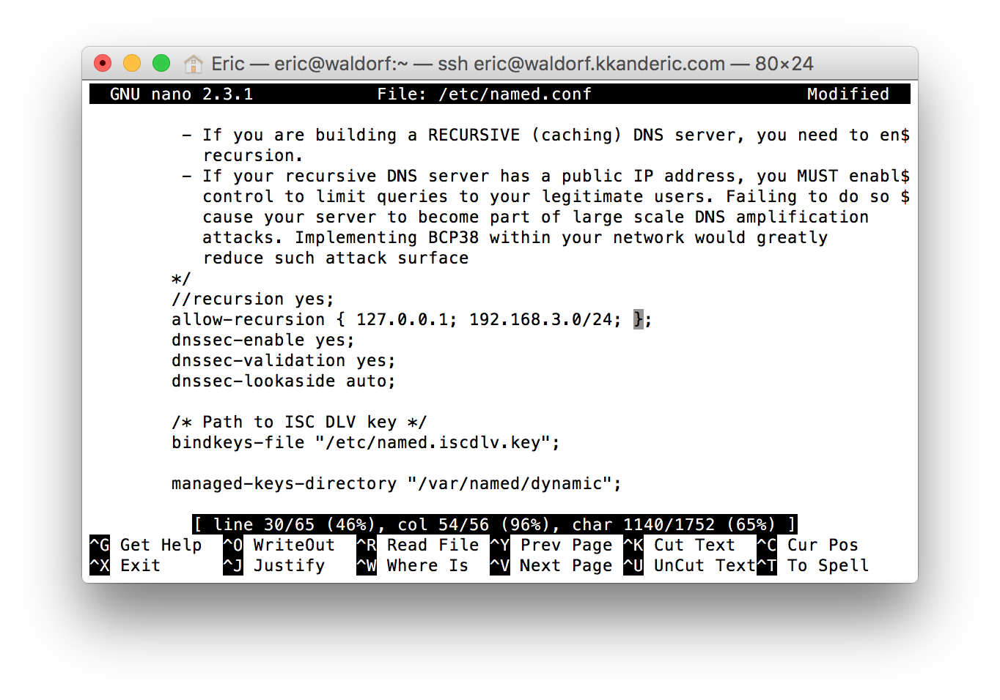

The second exercise assigned for the eighth lab was to install and configure services to create a NAT router on our servers.
Requirements
The requirements to create the NAT router are:
- Functioning Lab Machine
- A second network interface.
Configuring the Second Network Interface
To configure the second network interface:
- Launch the Network Manager Text User Interface:
$ nmtui - Highlight the edit connection option with the keyboard arrow keys, and select it with the return key:
- Highlight your new network interface from the list, and select it with the return key. It may have been renamed "Wired Connection 1".
- Highlight the IP4V Configuration option for your connection, and select it using the return key, select Manual from the pop-up list you are presented with:
- Select the show option for the IPv4 configuration.
- Select the option to "Add" an address to your connection's IPv4 configuration:
- Enter a private range IPv4 address, with a /24 subnet, in my case I chose 192.168.3.250/24:
- Select the option for your connection's IPv6 configuration, and set it to ignore:
- Select the
OKoption from the bottom right corner of the dialog to save your configuration changes, and exit the utility.
At this point you will have configured your second network interface to operate your new internal network, however we must configure a few services that will effectively manage the internal network's configuration.
Configuring Network Administration Services
To configure the administration services for the new internal network:
- Check the configuration of the firewall's public zone:
$ firewall-cmd --list-allHere we see that the new network interface we have installed has been automatically added to the firewall's public zone.
- Change the zone assigned to your second network interface with the command:
$ firewall-cmd --change-interface=<your network interface> --zone=internalNotice that we did not add the
--permanentoption to the command; if it is added, the command will silently fail. Reload the firewall configuration with:$ firewall-cmd --reloadWe can now inspect that the interface has been added to the public zone with the command:
$ firewall-cmd --list-all --zone=internal - Next we must enable masquerade on the public zone. This allows traffic from the internal network interface to be routed to the interfaces in the public zone (Network Address Translation Routing). We do this with the command:
$ firewall-cmd --zone=public --add-masquerade --permanent - Edit your DNS server configuration,
/etc/named.conf, to allow it to listen for requests on your internal interface: Here I have added the address I configured my internal network interface to use, 192.168.3.250. - Edit your DNS server configuration,
/etc/named.conf, to allow the server to perform recursive lookups for clients connecting from the internal interface:  Here I have whitelisted recursion for clients that have addresses within the subnet that the address I configured my internal interface is within, 192.168.3.0/24 - Restart your DNS server to force it to reload its configuration:
$ systemctl restart named - Allow DNS queries through the firewall in the internal zone, and reload the firewall configuration:
$ firewall-cmd --add-port=53/udp --zone=internal --permanent $ firewall-cmd --reload - Install a DHCP server:
$ yum install dhcp - Change into the DHCP server's configuration directory:
$ cd /etc/dhcp - Download the preconfigured DHCP server configuration:
$ curl -O http://cgelowitz.gelowitz.org/dhcpd.conf - Edit the configuration file you just downloaded. In my case, because I used an address in the 192.168.3.0/24 Subnet, I have only three changes that are necessary, as the configuration file is already setup for a server running a network on that subnet. Here I have changed the hostname of the network to match the hostname that has been assigned to my machine, and I have changed the DNS server address that will be provided to clients connecting to my internal network to the address I have configured for my second (internal) network interface. The changes I have made are circled in red. The last change I have to make to this configuration is to the address of the default gateway that is provided to clients connecting to my internal network; here again I have changed the configured address to be the address I configured for my machine's internal network interface. The change is outlined in red.
At this point, any single client should be able to connect directly to your machine's internal network interface via a cross-over ethernet cable, or indirectly through a switch. When it does, it will be assigned an IP address by your DHCP server, and will be given enough information (Default Gateway, DNS Server address) that it will be able to connect to the internet by routing traffic through your machine's primary (public) network interface.